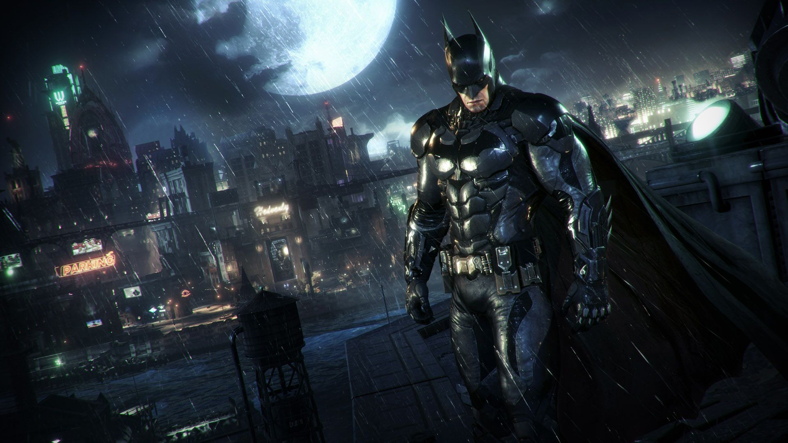
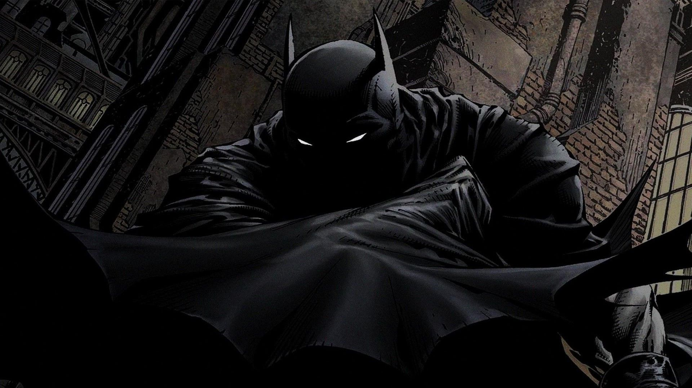
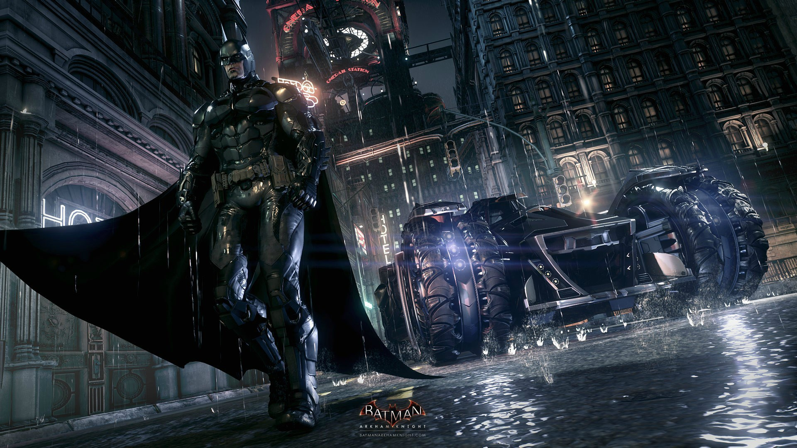
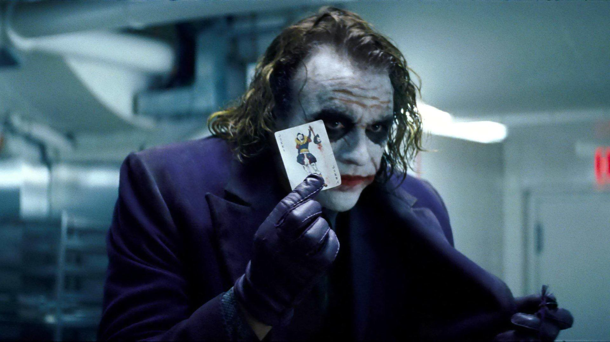
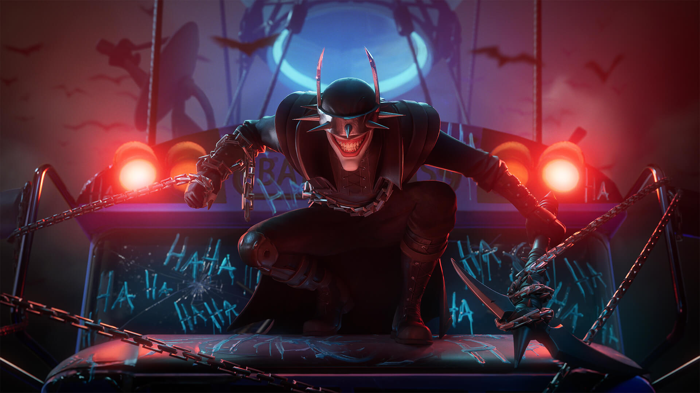
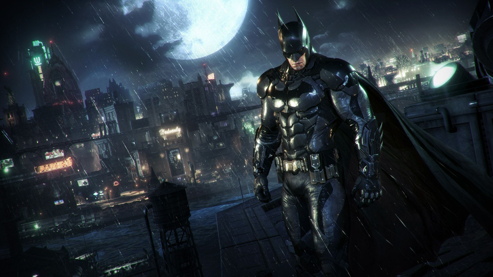
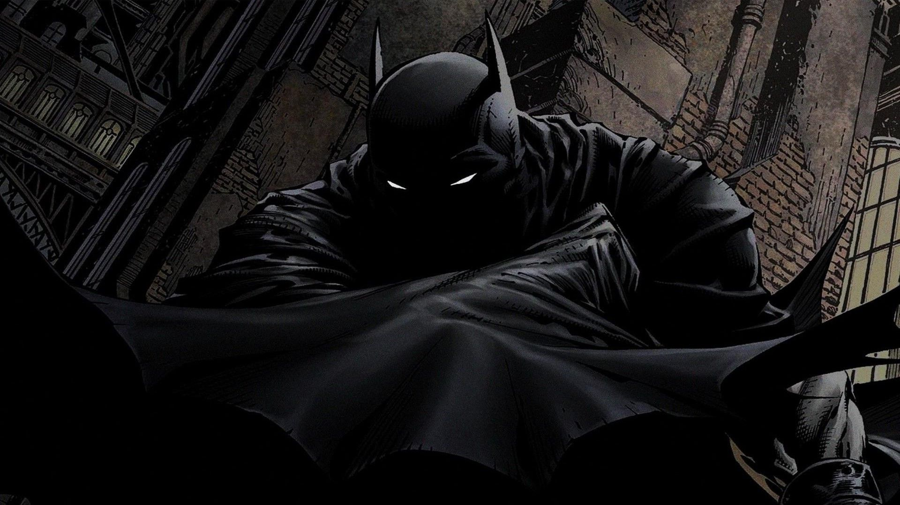
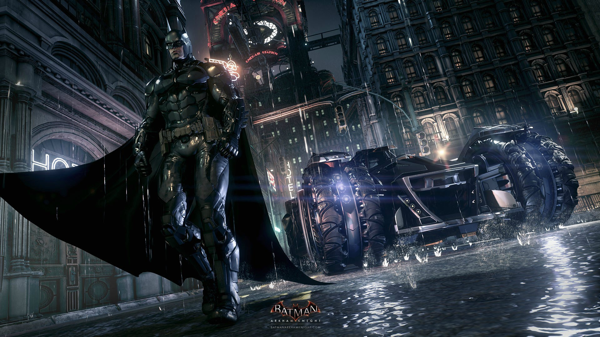
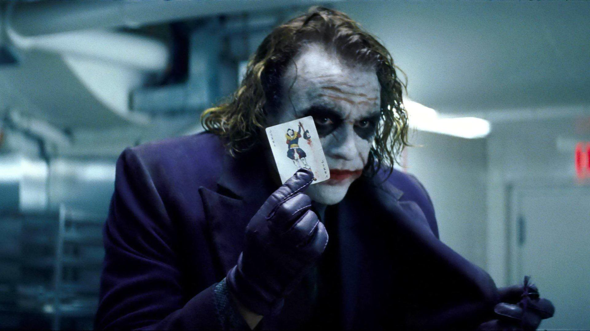
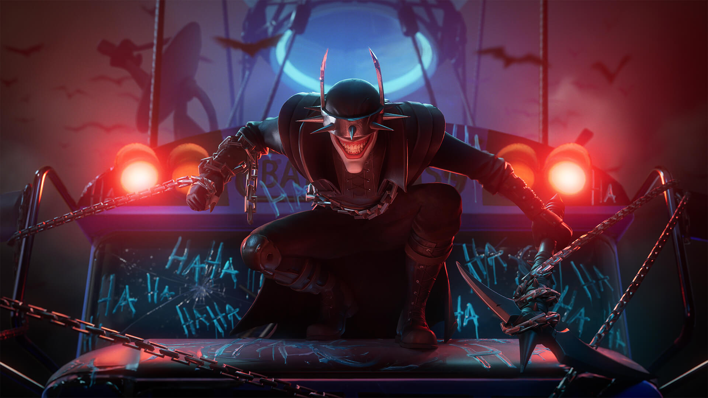
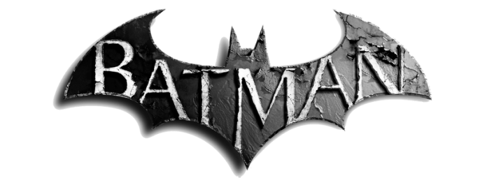
Após dois anos espreitando as ruas como Batman, Bruce Wayne se encontra nas profundezas mais sombrias de Gotham City. Com poucos aliados confiáveis,Wayne se torna um vigilante altamente treinado e habilidoso, que luta contra os criminosos mais perigosos da cidade usando sua inteligência, habilidades físicas e uma variedade de gadgets tecnológicos.